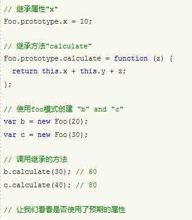

-
-
经验分享
兴趣
理论基础
动手实践
心得体会
-
JavaScript进阶
This指针
this与上下文中可执行代码的类型有直接关系，this值在进入上下文时确定，并且在上下文运行期间永久不变。
在通常的函数调用中，this是由激活上下文代码的调用者来提供的，即调用函数的父上下文(parent context )。this取决于调用函数的方式。
-
JavaScript进阶
闭包
想一想
-
JavaScript进阶
闭包
闭包是一系列代码块，并且静态保存所有父级的作用域。通过这些保存的作用域来搜寻到函数中的自由变量。
-
JavaScript进阶
作用域链
-
JavaScript进阶
作用域链
变量对象(variable object) 是与执行上下文相关的 数据作用域(scope of data) 。
它是与上下文关联的特殊对象，用于存储被定义在上下文中的 变量(variables) 和 函数声明(function declarations) 。
我们会用到内部函数[inner functions]，在这些内部函数中，我们可能会引用它的父函数变量，或者全局的变量。我们把这些变量对象成为上下文作用域对象[scope object of the context]. 类似于上面讨论的原型链[prototype chain]，我们在这里称为作用域链[scope chain]。
作用域链是一个 对象列表(list of objects) ，用以检索上下文代码中出现的 标识符(identifiers) 。
-
JavaScript进阶
执行上下文
一个执行的上下文可以抽象的理解为object。每一个执行的上下文都有一系列的属性（我们称为上下文状态），他们用来追踪关联代码的执行进度。
变量对象(variable object)，this指针(this value)，作用域链(scope chain)
-
JavaScript进阶
执行上下文栈

当一段程序开始时，会先进入全局执行上下文环境[global execution context], 这个也是堆栈中最底部的元素。此全局程序会开始初始化，初始化生成必要的对象[objects]和函数[functions]. 在此全局上下文执行的过程中，它可能会激活一些方法（当然是已经初始化过的），然后进入他们的上下文环境，然后将新的元素压入堆栈。在这些初始化都结束之 后，这个系统会等待一些事件（例如用户的鼠标点击等），会触发一些方法，然后进入一个新的上下文环境。
-
JavaScript进阶
构造函数
-
JavaScript进阶
构造函数
-
JavaScript进阶
构造函数
-
JavaScript进阶
构造函数
构造函数在 特定模式下创建对象，并自动为创建的新对象设置了原型对象。
-
JavaScript进阶
原型链
this这个值在一个继承机制中，仍然是指向它原本属于的对象，而不是从原型链上找到它时，它所属于的对象。例如，以上的例子，this.y是从b和c中获取的，而不是a。当然，你也发现了this.x是从a取的，因为是通过原型链机制找到的。
-
JavaScript进阶
原型链
原型链是一个由对象组成的有限对象链由于实现继承和共享属性。
-
JavaScript基础
函数
3种声明方式function声明，function操作符和function构造器（不推荐这种，导致解析两次，影响性能）。 Java的向量（vectors）。数组的值根据键来定位，而不是根据偏移量，这使JavaScript数组非常方便地使用，但不适合那些数字分析应用。
函数是对象，函数名是指针
解析器会率先读取函数声明，函数表达式要等解析器执行到才被解析执行。
没有重载
-
JavaScript基础
数组
JavaScript中数组也是哈希表对象，这使它非常好地与稀少的数组程序相称。当你声明了一个数组，你不需要声明它的大小，数组会自增长，这很像 Java的向量（vectors）。数组的值根据键来定位，而不是根据偏移量，这使JavaScript数组非常方便地使用，但不适合那些数字分析应用。
A[0]=“aa” 或者A[“first”]=“aa”
-
JavaScript基础
对象
一个对象就是一个涉及到键/值对的集合，键是字符串（或者其他的元素比如那些被转化为字符串的数字），值可以是任何数据类型，包括其他对象。对象经常以哈希表的方式实现，但是没有任何哈希表（比如哈希函数或重写的函数）天性的可见。
Object类型和JSON的区别
-
JavaScript基础
数据类型
弱类型语言 使用var声明 解释性语言
JavaScript包含一小套数据类型，它有3种简单的类型：boolean,number, 和 string;特殊的值：null,undefined;其他的所有基于object类型的变化。
-
JavaScript的设计
JavaScript作者的设计思路是这样的：所以， Javascript语言实际上是两种语言风格的混合产物----（简化的）函数式编程+（简化的）面向对象编程。（1）借鉴C语言的基本语法；
（2）借鉴Java语言的数据类型和内存管理；
（3）借鉴Scheme语言，将函数提升到"第一等公民"（first class）的地位；
（4）借鉴Self语言，使用基于原型（prototype）的继承机制。
-
JavaScript的大牛们
《JavaScript高级程序设计》作者： Nicholas C. Zakas《PPK谈JavaScript》作者： Peter-Paul Koch(PPK) -
JavaScript的大牛们
《JavaScript语言精粹》的作者： Douglas CrockfordJquery作者： John Resig -
诞生
JavaScript他爹其实并不喜欢JavaScript，只用10天时间就把JavaScript设计出来了。有兴趣可以看---JavaScript诞生记
JavaScript的发明者： Brendan Eich -
我们仍未知道那天所讲的叫JS
主讲人：朱颖妍